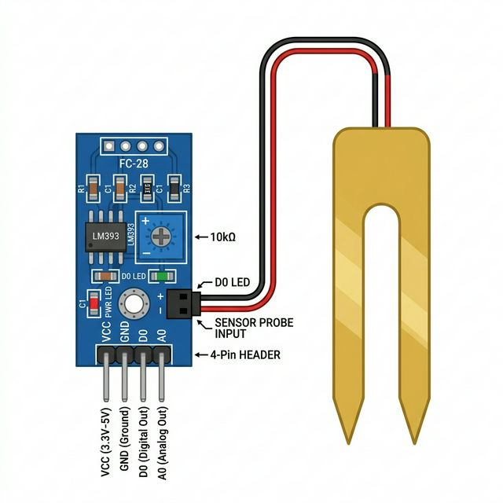

The Soil Moisture Sensor is a simple breakout board used to measure the volumetric content of water inside the soil. It is frequently employed in automated plant watering systems, smart agriculture, and greenhouse monitoring.

This sensor operates on the principle of electrical resistance (or conductivity):
| Pin | Function |
|---|---|
| VCC | Power supply. Connect to Arduino 5V or 3.3V. |
| GND | Common ground connection. |
| SIG / A0 | Analog Output. Connect to an Arduino Analog pin (e.g., A0) to read the moisture levels. |
During a running simulation, a dark floating control panel with a slider labeled "Soil Moisture" will appear near the sensor. Drag this slider to simulate watering a dry plant (from 0% moisture up to 100%). Your Arduino's `analogRead(A0)` will decrease automatically as the simulated moisture increases!
Reading the sensor is as simple as using Arduino's built-in analogRead() function and mapping the inverse relationship.
// Define Sensor Pins
const int sensorPin = A0; // Analog pin connected to SIG
void setup() {
Serial.begin(9600); // Start serial monitor
Serial.println("Soil Moisture Sensor active.");
}
void loop() {
// Read the raw analog moisture value (0 to 1023)
// Remember: 1023 = Completely Dry, 0 = In Water
int sensorValue = analogRead(sensorPin);
// Map the raw value to a human-readable percentage (0% to 100%)
// We invert the scale here so 100% means fully wet.
int moisturePercent = map(sensorValue, 1023, 0, 0, 100);
// Safely clamp the values just in case
moisturePercent = constrain(moisturePercent, 0, 100);
Serial.print("Raw Value: ");
Serial.print(sensorValue);
Serial.print(" | Moisture Level: ");
Serial.print(moisturePercent);
Serial.println("%");
// Example automation logic
if (moisturePercent < 30) {
Serial.println("⚠️ Plant is THIRSTY! Turn on water pump!");
}
delay(2000); // Wait 2 seconds before the next reading
}